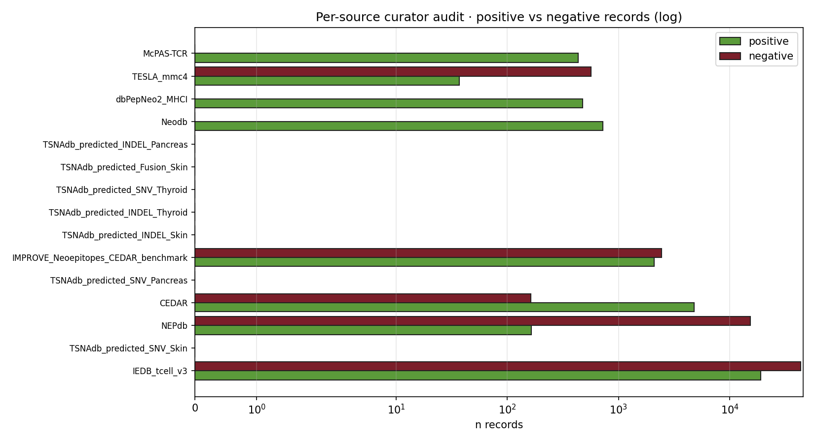

이 페이지는 원본 내용을 유지하면서, 첫 화면에 분석 데이터 정의서, 현재 claim boundary, 읽는 순서, figure/table 해설을 새로 붙인 2026-05-09 리뉴얼 버전입니다. 모든 그림은 “어떤 데이터가 들어갔는지 / 어떻게 읽는지 / 어디까지 주장 가능한지”를 같이 표시합니다.
TCGA-THCA GSE76039 / Landa advanced thyroid Hugo/Riaz melanoma ICI pool AFND / Korean HLA references 8-gene mini-index RAI_8 / thyroid differentiation score MAPK output score HLA-II / IFN-gamma module Cohen's d / Spearman rho / Cox HR Neoantigen / pMHC / TCR resources
| Term | Class | Definition | Where this page uses it |
|---|---|---|---|
| TCGA-THCA | cohort | TCGA thyroid carcinoma cohort; RNA-seq, clinical, mutation, methylation and cBioPortal-derived mutation/clinical slices depending on page. | Paper 1 DM1/DM2 derivation, survival, promoter methylation, driver strata, and several downstream reuse pages. |
| GSE76039 / Landa advanced thyroid | cohort | Advanced thyroid cancer expression resource used as a PDTC/ATC lineage-collapse benchmark. | Mechanism heterogeneity, advanced-disease comparisons, and reverse-causality boundary checks. |
| Hugo/Riaz melanoma ICI pool | cohort | External melanoma immunotherapy RNA/clinical resources used as ICI-response context, not thyroid predictor proof. | Paper 3 vulnerability-only evidence and claim-boundary pages. |
| AFND / Korean HLA references | reference | Allele-frequency and literature-derived HLA reference material; some rows are registry/approval-gated rather than executable analysis inputs. | Paper 2 HLA and Paper 4 GD/Pan-Asian backlog pages. |
| 8-gene mini-index | score | Curated thyroid-lineage/dedifferentiation panel used to split molecular dark-matter states; higher DM1-like score means more dedifferentiated. | Paper 1 core axis and many downstream transfer/image/vulnerability pages. |
| RAI_8 / thyroid differentiation score | score | Mean z-score over thyroid differentiation genes; direction is differentiated / RAI-avid unless explicitly negated. | Lineage preservation/collapse comparisons and treatment-rationale pages. |
| MAPK output score | score | MAPK pathway output or driver-class proxy used to compare pathway activity against thyroid-lineage scores. | Paper 1 Fig 8 mechanism extensions v9-v18 and PRISM/DepMap overlays. |
| HLA-II / IFN-gamma module | score | Inflammation / antigen-presentation module used for HT-overlap and ICI-vulnerability context. | Paper 2/Paper 3/Paper 4 HLA and immune-context pages. |
| Cohen's d / Spearman rho / Cox HR | statistic | Effect-size and association statistics reported from local TSV/JSON/HTML tables; direction must be read from each table caption. | Most dossier and validation pages. |
| Neoantigen / pMHC / TCR resources | external resource | Neoantigen, protein-language-model, structural, TCR and literature-corroboration resources used in the vaccine pages. | Cancer vaccine, neoantigen, TCR and pMHC pages. |

curator audit
alphafold_simulation anchor_atlas autoimmunity_browser barneo_high_impact_candidate_pack_ barneo_top_pass_reviewer_evidence_ batch30_panel cancer_vaccine_agent cancer_vaccine_barneo_x_interpreta
Current situation: current_situation_2026_0509.html · Source page: project/papers_hub_2026_0509/curator_audit.html · Renewed page: project/papers_hub_2026_0509/curator_audit.html · Voice-protected manuscript sections were not edited.
Which curator delivers what? Each of the 21 source variants in our master corpus has a different curation philosophy — different assays, different positivity thresholds, different HLA distributions. Mapping these explicitly is the prerequisite for any honest cross-source benchmark.
Figure · Per-source positive (green) vs negative (red) records, log scale. NEPdb is overwhelmingly negative. CEDAR + Healthy gut microbiome are nearly all-positive. TESLA is balanced.
| Source | n | val rate | HLA | median len | style |
|---|---|---|---|---|---|
| IEDB tcell v3 | 62,376 | 0.305 | >200 alleles | 9 | aggregator (1000s of papers) |
| McPAS-TCR | 36,474 | — | >100 | — | TCR-pMHC curated pairs |
| NEPdb | 15,556 | 0.019 | ~50 | 9 | negative-heavy (98%) ★ |
| CEDAR | 4,937 | 0.967 | ~30 | 9 | API human + neoantigen filter |
| IMPROVE benchmark | 2,436 | 0.85 | ~20 | 9-10 | 17.5k tested, 467 T-cell+ |
| TESLA mmc4 | 605 | 0.40 | HLA-A*11:01 | 9-11 | patient-matched, KRAS-rich |
| TESLA mmc7 | 310 | 0.45 | multiple | 9 | validation cohort |
| TSNAdb predicted Skin | 19,820 | 0 | ~30 | 9 | L0 PREDICTED only |
| TSNAdb predicted Pancreas | 3,938 | 0 | ~30 | 9 | L0 PREDICTED only |
| TSNAdb validated | 83 | 1.0 | 20 | 9 | L4 HELD_OUT |
| dbPepNeo2 MHC-I | 706 | 0.92 | ~40 | 9 | ★ rescued from Neodb zip |
| dbPepNeo2 MHC-II | 55 | 0.95 | ~10 | 15 | HLA-DR / DP / DQ |
| Neodb | 723 | 0.96 | ~50 | 9 | Wu 2025 Zenodo |
| NeoRanking | 26 | 1.0 | ~10 | 9 | L5 patient-matched |
| BigMHC example | 9 | — | — | — | illustrative only |
아래 audit는 이 HTML 안의 모든 img와 table을 스캔해 만든 provenance layer입니다. 각 그림/표가 어떤 데이터 계열을 받았는지, 어떻게 읽어야 하는지, 어떤 로컬 path를 봐야 하는지, 어디까지가 자동 추정인지 분리합니다.
curator audit
| # | Asset path | Caption / page explanation | Data entered | Matched local result/source |
|---|---|---|---|---|
| 1 | manuscript_artifacts/curator_audit_fig.png | curator audit | Inline page visual; source path and caption are the binding provenance row for this audit. | No same-basename result file found; use page asset path as provenance. |
| # | Caption / heading | Data entered |
|---|---|---|
| 1 | Inline HTML table 1 | Rows are embedded in this HTML file. Treat the table body as the immediate data source; upstream TSV/JSON is listed when linked or named in the page. |
| # | Level | Heading |
|---|---|---|
| 1 | H1 | Per-Source Curator Audit |
| 2 | H2 | Per-source positive vs negative counts |
| 3 | H2 | Top 15 curator profile |
| 4 | H2 | Honest curator-bias map |
| # | Link |
|---|---|
| 1 | conflict_map.html |
| 2 | lumenix_cancer_vaccine_index.html |
{kind=link}